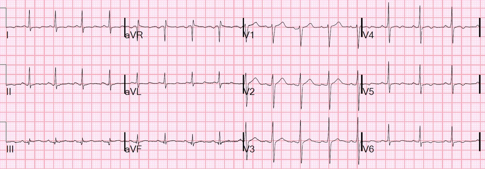
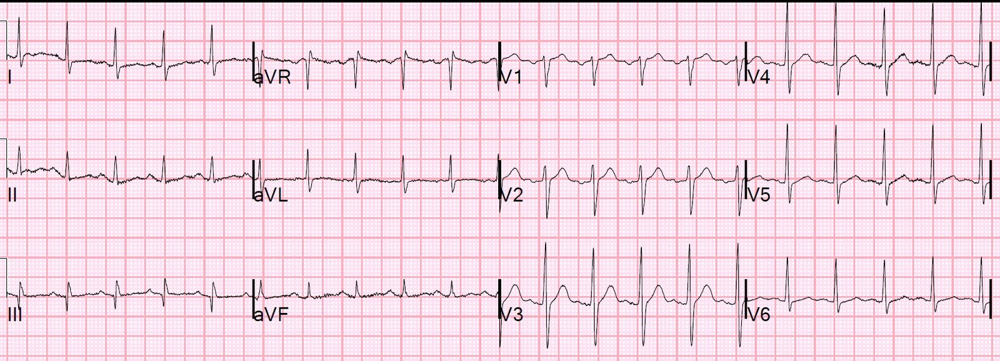
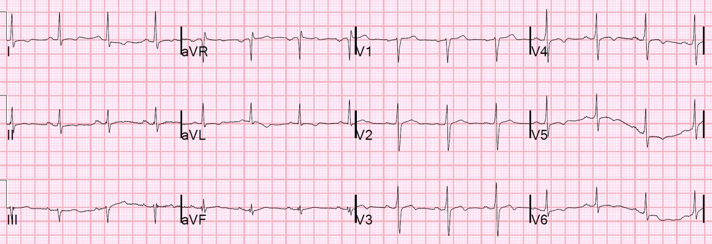
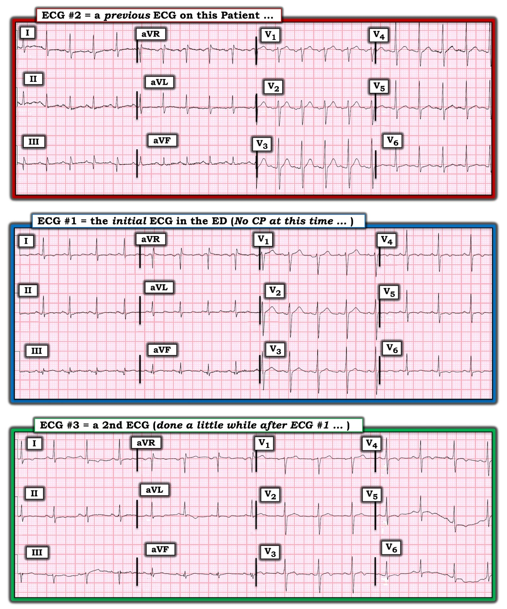

08/05/2022 — Đau thắt ngực không ổn định vẫn còn tồn tại trong kỷ nguyên troponin độ nhạy cao, kèm một bài học ngắn về diễn giải troponin
Bản dịch tiếng Việt của bài "Unstable Angina Still Exists in Era of high sensitivity troponin, with a short lesson on troponin interpretation" – Dr. Smith’s ECG Blog. Giữ nguyên toàn bộ 5 hình ảnh của bản gốc.
Nam 42 tuổi, không có tiền sử bệnh lý, đến khám vì đau ngực khởi phát từ 2 tuần trước. Cơn đau không liên tục, mà chỉ kéo dài vài phút. Đau sau xương ức, không lan, kèm khó thở (SOB). Đau ngực khởi phát từ 2 tuần. Bệnh nhân cho biết cơn đau không liên tục.
Bệnh nhân có tiền sử tăng huyết áp (HTN), rối loạn lipid máu, đái tháo đường típ 2, hút thuốc 1/3 bao/ngày (4 yếu tố nguy cơ).
Vài ngày trước đó, cơn đau ngực dữ dội, kéo dài khoảng 10 phút và khiến bệnh nhân vã mồ hôi.
Vào ngày đến viện, khi đang đi bộ từ bãi đỗ xe vào khoa cấp cứu (ED), cơn đau ngực tái phát và kéo dài khoảng 2 phút.
Đây là điện tâm đồ của bệnh nhân tại khoa cấp cứu:


Có sóng T dạng xuống-lên (down-up) không đặc hiệu ở I, aVL
Một ít sóng T đảo ngược không đặc hiệu ở V4-V6
Đây là một điện tâm đồ cũ:


Khi đó chưa có các thay đổi sóng T này.
Những thay đổi sóng T như thế này có thể xuất hiện rồi biến mất mà không có lý do rõ ràng, nên các khác biệt này có thể do, hoặc không do, thiếu máu cục bộ/nhồi máu cơ tim. Vì điện tâm đồ phía trên được ghi khi bệnh nhân không có triệu chứng, nên ít khả năng nó biểu hiện một nhồi máu cơ tim do tắc (OMI) đang diễn ra, nhưng nó có thể biểu hiện một nhồi máu cơ tim không do tắc (NOMI).
Kết quả troponin I độ nhạy cao đầu tiên là 32 ng/L. Giới hạn trên tham chiếu (URL) bách phân vị thứ 99 là 34 ng/L ở nam và 16 ng/L ở nữ; vì bệnh nhân là nam, nồng độ này chưa hẳn đủ tiêu chuẩn nhồi máu cơ tim cấp.
Định nghĩa toàn cầu lần thứ 4 về nhồi máu cơ tim đòi hỏi:
1) cTn tăng và/hoặc giảm, với ít nhất một giá trị trên bách phân vị thứ 99, xảy ra trong bối cảnh lâm sàng phù hợp với thiếu máu cục bộ cơ tim cấp. VÀ
2) có 1 hoặc nhiều yếu tố sau: a) triệu chứng thiếu máu cục bộ, b) xuất hiện sóng Q bệnh lý trên điện tâm đồ 12 chuyển đạo, c) thay đổi điện tâm đồ cho thấy thiếu máu cục bộ mới, d) bằng chứng hình ảnh học về mất cơ tim còn sống mới hoặc rối loạn vận động thành khu trú mới, hoặc e) phát hiện huyết khối trong mạch vành qua chụp mạch hoặc khám nghiệm tử thi.)
Vì troponin này không vượt quá URL bách phân vị thứ 99, đây không phải là nhồi máu cơ tim cấp (ít nhất là cho tới lúc này). Nhưng biết đâu lần đo tiếp theo sẽ cao hơn và ta có thể chẩn đoán nhồi máu cơ tim?
Đoạn xen giảng giải về troponin: Tại sao 32 ng/L là bình thường, mà không phải là cao?
Nhà sản xuất xác định giá trị bình thường từ một quần thể những người “bình thường” không có triệu chứng, không có bệnh tim đã biết. Giá trị mà 99% người bình thường có kết quả đo thấp hơn được định nghĩa là URL. Với xét nghiệm troponin I độ nhạy cao Abbott Architect này, giá trị đó là 16 ng/L ở nữ và 34 ng/L ở nam. Tuy nhiên, những người có giá trị đo được dưới bách phân vị thứ 99 (dưới URL nhưng trên giới hạn phát hiện – LoD) có tỷ lệ biến cố bất lợi trong 180 ngày cao gấp ＞3 lần so với những người có giá trị được báo cáo là dưới giới hạn phát hiện (LoD), tức 1.9 ng/L (châu Âu). [FDA Hoa Kỳ chỉ cho phép báo cáo LoD ở mức 4 ng/L]. Dữ liệu này lấy từ công trình của chúng tôi đăng trên Circulation.
Dr. Fred Apple và cộng sự đã nghiên cứu nhiều xét nghiệm trên những người còn chắc chắn “bình thường” hơn nữa. (Clinical Chemistry, tập 66, số 3, tháng Ba năm 2020, trang 434–444), được chứng minh bằng GFR bình thường, Hemoglobin A1C bình thường và BNP bình thường. Ở nhóm không triệu chứng, không có bằng chứng bệnh nặng này, giá trị của xét nghiệm Abbott Architect (ông cũng nghiên cứu một số xét nghiệm khác) là 13 ng/L ở nữ và 20 ng/L ở nam.
Vậy với một bệnh nhân rất khỏe mạnh, giá trị 32 ng/L thực ra là cao!! Tuy vậy, nói một cách chặt chẽ, không thể dùng nó để chẩn đoán nhồi máu cơ tim cấp. Nhưng chắc chắn nó có thể khiến bạn nghi ngờ căn nguyên là hội chứng vành cấp (ACS), và do đó chẩn đoán là đau thắt ngực không ổn định.
Còn bệnh nhân này thì sao? A1C của bệnh nhân = 9.2, GFR bình thường và BNP bình thường. Không rõ bách phân vị thứ 99 của một nhóm bệnh nhân có GFR bình thường, BNP bình thường nhưng A1C tăng sẽ là bao nhiêu.
Một điện tâm đồ khác được ghi:


Không giúp ích nhiều.
Troponin lần 2 là 33 ng/L. Vậy “delta” chỉ là 1 ng/L, không đáng kể (chênh lệch này nằm trong độ không chính xác của phòng xét nghiệm). Dữ liệu và phác đồ của chúng tôi cho rằng nếu cả hai lần troponin đều dưới URL bách phân vị thứ 99 (34 ng/L) và delta < 3, thì bệnh nhân sẽ không được khẳng định nhồi máu cơ tim kể cả khi đo thêm troponin (ví dụ ở giờ thứ 6 hoặc 12). Do đó bệnh nhân đủ điều kiện xuất viện.
Tuy nhiên, bệnh nhân có bệnh sử điển hình, như ở đây, không được cho xuất viện, bất kể điện tâm đồ hay troponin ra sao!
Hãy tính thang điểm HEART: bệnh sử đáng lo ngại, 4 yếu tố nguy cơ và điện tâm đồ không đặc hiệu = 5 (nguy cơ trung bình)
Còn thang điểm EDACS: = 15 (< 16 là nguy cơ thấp)
Vì vậy bệnh nhân được nhập viện.
——-Một lựa chọn khác là chụp CT mạch vành, nhưng chỉ thực hiện được từ 8 giờ sáng – 4 giờ chiều các ngày trong tuần. Ngoài ra, vì triệu chứng của bệnh nhân này khởi phát do gắng sức, nghiệm pháp gắng sức là một xét nghiệm rất phù hợp với bệnh nhân.
Ngày hôm sau bệnh nhân được làm siêu âm tim gắng sức, kết quả dương tính và rất đáng chú ý:
Bệnh nhân gắng sức được 7:25 phút theo phác đồ Bruce chuẩn và đạt tần số tim đỉnh 153 nhịp/phút, tương ứng 86% tần số tim tối đa dự đoán theo tuổi, với mức gắng sức ước tính 9.1 METs. Nghiệm pháp được dừng do đau ngực và khó thở.
Siêu âm tim gắng sức bất thường với độ chắc chắn cao – có bằng chứng thiếu máu cục bộ ở vùng chi phối của LAD.
1. Rối loạn vận động thành xuất hiện khi gắng sức – vô động vùng vách mỏm, trước vách giữa, trước từ giữa đến mỏm, bên mỏm và dưới mỏm khi gắng sức.
2. Chức năng thất trái bình thường lúc nghỉ, giảm nặng khi gắng sức.
3. Thất trái giãn khi gắng sức.
4. Đáp ứng điện tâm đồ kiểu thiếu máu cục bộ khi gắng sức (ST chênh xuống dạng đi ngang tới 2 mm ở các chuyển đạo thành dưới, nặng nhất ở phút 3:00 của giai đoạn hồi phục).
5. Bệnh nhân có đau thắt ngực khi gắng sức.
6. Khả năng gắng sức ở mức khá (đạt 85% METS so với tuổi và giới).
7, Đáp ứng tăng huyết áp khi gắng sức (huyết áp đỉnh 215/111 mmHg).
Chụp mạch vành:
Bệnh 3 nhánh mạch vành nặng.
Phải phẫu thuật bắc cầu chủ vành (CABG) 5 cầu nối.
Những điểm cần học:
1. Đau thắt ngực không ổn định vẫn còn tồn tại.
2. Một giá trị troponin dưới ngưỡng chẩn đoán nhồi máu cơ tim không phải lúc nào cũng bình thường.
3. Một bệnh sử điển hình phải được đặt lên trên một điện tâm đồ và troponin âm tính.

===================================
Bình luận của KEN GRAUER, MD (8/5/2022):
===================================
Là một bác sĩ điều trị chính trong chăm sóc ban đầu, người đã nhiều năm giảng dạy nghiệm pháp gắng sức thể lực ( = EST hoặc ETT) cho các bác sĩ nội trú Y học gia đình — một trong những điểm gây nhầm lẫn phổ biến nhất mà tôi thấy là sự phân biệt giữa việc “loại trừ” nhồi máu cơ tim — với quyết định theo dõi tiếp sau khi ra khỏi khoa cấp cứu hay xuất viện bằng việc đánh giá khả năng có bệnh mạch vành nền.
- Chỉ vì bệnh nhân được loại trừ một biến cố cấp — hoàn toàn không loại trừ khả năng bệnh nhân này vẫn có hẹp mạch vành nền.
Tôi thấy thú vị khi người đàn ông 42 tuổi trong ca hôm nay đến khoa cấp cứu. Ông ấy đúng là tự đi bộ vào khoa cấp cứu!
- Bệnh sử mà bệnh nhân vốn khỏe mạnh này kể là đau ngực bắt đầu từ 2 tuần trước. Cơn đau không liên tục. Mỗi cơn chỉ kéo dài vài phút (theo lời bệnh nhân — không bao giờ quá 10 phút). Đau sau xương ức, không lan — và kèm khó thở. Bệnh nhân có kể một cơn đau ngực dữ dội hơn kéo dài 10 phút kèm vã mồ hôi — nhưng đó là vài ngày trước. Ngoài ngày nhập viện — bệnh sử được cung cấp không đề cập gì đến các yếu tố làm nặng thêm hay làm giảm đau.
- Từ bệnh sử đã cho — chúng ta không biết TẠI SAO bệnh nhân lại chọn đúng ngày hôm đó để đi bộ vào khoa cấp cứu. Lần duy nhất đề cập đau ngực trong ngày hôm đó là khi đi bộ từ bãi đỗ xe, và cơn đau đó chỉ kéo dài 2 phút.
- LƯU Ý: Đúng là “những người chối bỏ” thường xem nhẹ (hoặc hoàn toàn phủ nhận) triệu chứng — nhưng ít nhất là trên giấy tờ — bệnh sử mà chúng ta được cung cấp, với tôi, nghe không giống bệnh sử của một biến cố cấp. Dù vậy — điều đáng lo ngại rõ ràng ở người đàn ông 42 tuổi chưa từng đau ngực này là 4 yếu tố nguy cơ mạch vành đáng kể (tức là hút thuốc, tăng huyết áp, rối loạn lipid máu và đái tháo đường).
- Điểm MẤU CHỐT: Y văn gợi ý rằng với một bệnh nhân ở “độ tuổi nhất định” đến khoa cấp cứu vì đau ngực mới xuất hiện — các yếu tố nguy cơ tim mạch chỉ đóng vai trò nhỏ trong việc ảnh hưởng đến khả năng bệnh nhân đang có một biến cố tim cấp. Ngược lại — khả năng có bệnh mạch vành nền chịu ảnh hưởng rất lớn bởi sự hiện diện của nhiều yếu tố nguy cơ tim mạch (như những yếu tố được mô tả ở bệnh nhân hôm nay).
- LƯU Ý CỦA TÁC GIẢ: Theo kinh nghiệm của tôi — có một sự “tự chọn lọc” vô thức mà bệnh nhân đau ngực đưa ra theo trực giác vào lúc quyết định đến phòng khám bác sĩ gia đình, đến trung tâm Chăm sóc khẩn cấp (Urgent Care) — hay đến khoa cấp cứu. Ý tôi là, với bệnh sử và yếu tố nguy cơ giống hệt nhau — khả năng thống kê rằng bệnh nhân đang có biến cố cấp cao hơn nhiều ở những bệnh nhân đến khoa cấp cứu, so với những bệnh nhân quyết định đến phòng khám. Trong 30 năm khám bệnh nhân ngoại trú và hướng dẫn vô số bác sĩ nội trú — rất hiếm khi có bệnh nhân nhồi máu cơ tim cấp đến phòng khám của chúng tôi. Thay vào đó, hầu như tất cả bệnh nhân của chúng tôi bị nhồi máu cơ tim cấp đều đã “tự chọn lọc” và đến khoa cấp cứu.
Những điều trên liên quan thế nào đến bệnh nhân hôm nay?
Dù bệnh sử không gợi ý một biến cố tim cấp — bệnh nhân hôm nay đã đến khoa cấp cứu. Chỉ riêng điều này đã đủ để biện minh cho việc đánh giá đầy đủ nhằm loại trừ OMI cấp (nhồi máu cơ tim do tắc – Occlusion-based Myocardial Infarction).
- Như Dr. Smith đã nói — dù các giá trị troponin 32 ng/L và 33 ng/L của bệnh nhân này hơi thấp hơn “ngưỡng cắt” nhồi máu cơ tim cấp — các giá trị này rõ ràng cao hơn mong đợi khi so với một quần thể khỏe mạnh. Tôi không gọi các giá trị troponin này là “hoàn toàn bình thường”.
- Dù vậy — ngay cả NẾU các giá trị troponin huyết thanh và các điện tâm đồ liên tiếp của bệnh nhân này hoàn toàn bình thường — điều đó cũng hoàn toàn không loại trừ khả năng có bệnh mạch vành nền. Ngược lại, với 4 yếu tố nguy cơ tim mạch và bệnh sử triệu chứng mới xuất hiện của bệnh nhân này — một hình thức nào đó của nghiệm pháp gắng sức rõ ràng có chỉ định.
- NẾU thay vì đến khoa cấp cứu, bệnh nhân này đến phòng khám chăm sóc ban đầu của chúng tôi — chúng tôi cũng sẽ theo đúng cách tiếp cận đã được áp dụng sau khi loại trừ nhồi máu cơ tim ( = phân tầng nguy cơ bằng một hình thức nghiệm pháp gắng sức nào đó).
Các điện tâm đồ trong ca hôm nay có “âm tính” không?
3 điện tâm đồ ở trên rõ ràng không gợi ý OMI cấp. Dù vậy — tôi diễn giải loạt bản ghi này là bất thường, và có thể phù hợp với thay đổi ST-T “động” (dynamic).
- Để cho rõ — tôi đã đặt lại 3 điện tâm đồ của ca hôm nay trong Hình 1. Tôi đã sắp xếp lại thứ tự trình bày 3 bản ghi này để dễ so sánh giữa điện tâm đồ ban đầu ( = điện tâm đồ #1) của bệnh nhân — với bản ghi “nền” ( = điện tâm đồ #2) — rồi giữa điện tâm đồ ban đầu với điện tâm đồ ghi lại muộn hơn một chút tại khoa cấp cứu ( = điện tâm đồ #3).


SUY NGHĨ CỦA TÔI về 3 điện tâm đồ này:
- Điện tâm đồ #2 ( = bản ghi “nền”) — Nhịp là nhịp nhanh xoang với tần số khá nhanh ~115 lần/phút! Có sóng Q chưa rõ ý nghĩa ở chuyển đạo III. Không có lớn buồng tim. Tăng tiến sóng R bình thường. Có ST-T dẹt không đặc hiệu ở một số chuyển đạo — nhưng không có gì trông có vẻ cấp tính. Điểm MẤU CHỐT: Do nhịp nhanh đáng kể — không thể so sánh thực sự điện tâm đồ #2 với 2 điện tâm đồ ghi vào ngày bệnh nhân đến viện cho đến khi chúng ta hiểu hoàn cảnh gây ra nhịp nhanh này.
- Điện tâm đồ #1 ( = điện tâm đồ ban đầu trong ca hôm nay) — Nhịp xoang. Tần số tim thay đổi (tức là loạn nhịp xoang) — nhưng nhìn chung, tần số rõ ràng chậm hơn so với ở điện tâm đồ #2. Không có thay đổi đáng kể về trục mặt phẳng trán hay hình dạng QRS ở các chuyển đạo trước tim — nên ngoài thay đổi tần số tim, việc so sánh thay đổi ST-T giữa điện tâm đồ #1 và điện tâm đồ #2 là hợp lệ. Như Dr. Smith đã nêu ở trên — giờ đây có sóng T đảo ngược nông ở các chuyển đạo ngực bên V4,5,6 mà không có ở điện tâm đồ #2.
- Điện tâm đồ #3 ( = bản ghi được ghi sau điện tâm đồ #1 tại khoa cấp cứu) — Thấy nhịp xoang đều với tần số ~80-85 lần/phút (tần số hơi chậm hơn so với điện tâm đồ #1). Đã có thay đổi về trục mặt phẳng trán (tức là QRS giờ chủ yếu âm ở chuyển đạo III — trong khi ở điện tâm đồ #1 thì dương). Điều này có thể khiến việc đánh giá bất kỳ thay đổi “thực sự” nào về hình dạng ST-T ở các chuyển đạo chi trở nên khó hơn. Tôi cho rằng có một thay đổi nhẹ-nhưng-có-thật về hình dạng ST-T ở các chuyển đạo ngực (tức là sóng T ở V1,V2 nhỏ hơn — và sóng T đảo ngược nhiều hơn một chút ở các chuyển đạo khác).
NHẬN ĐỊNH: Rõ ràng các điện tâm đồ này không cho thấy dấu hiệu OMI cấp. Nhưng dù có một số khác biệt về tần số tim và trục mặt phẳng trán — tôi cho rằng đã có thay đổi so với điện tâm đồ cũ — và có lẽ cũng có thay đổi nhẹ về hình dạng ST-T ở điện tâm đồ #3 so với điện tâm đồ #2.
- OMI cấp về cơ bản đã được loại trừ.
- Người đàn ông 42 tuổi này với triệu chứng mới xuất hiện + 4 yếu tố nguy cơ tim mạch + 2 lần troponin huyết thanh ít nhất là đáng nghi ngờ + thay đổi điện tâm đồ tinh tế nhưng-tôi-nghĩ-là-có-thật — rõ ràng cần làm nghiệm pháp gắng sức.
- Siêu âm tim gắng sức bất thường — nhất là khi xuất hiện đau ngực lúc gắng sức kèm bằng chứng thiếu máu cục bộ trên cả siêu âm tim lẫn điện tâm đồ — làm tăng mạnh khả năng hậu nghiệm có bệnh mạch vành đáng kể. Tôi sẽ rất ngạc nhiên nếu thông tim không tìm thấy bệnh mạch vành đáng kể.
LƯU Ý CUỐI CÙNG CỦA TÁC GIẢ: Như tôi đã ám chỉ ở trên — nhiều bệnh nhân (nhất là nam giới, theo kinh nghiệm của tôi) — hoặc xem nhẹ hoặc phủ nhận triệu chứng đau thắt ngực. Tôi thấy việc chính mình là người có mặt để làm nghiệm pháp gắng sức cho bệnh nhân đã cho tôi một cơ hội đặc biệt để quan sát và hỏi bệnh nhân trong khi gắng sức. Điều này giúp tôi hiểu sâu sắc về bản chất và mức độ nặng của bất kỳ triệu chứng nào bệnh nhân đang gặp phải
- Tôi rất nghi ngờ người đàn ông 42 tuổi trong ca hôm nay là một “người xem nhẹ” triệu chứng. Tôi sẽ không hề ngạc nhiên nếu sau khi làm nghiệm pháp gắng sức — có thể khai thác được một bệnh sử triệu chứng đau thắt ngực kéo dài lâu hơn và điển hình hơn nhiều.